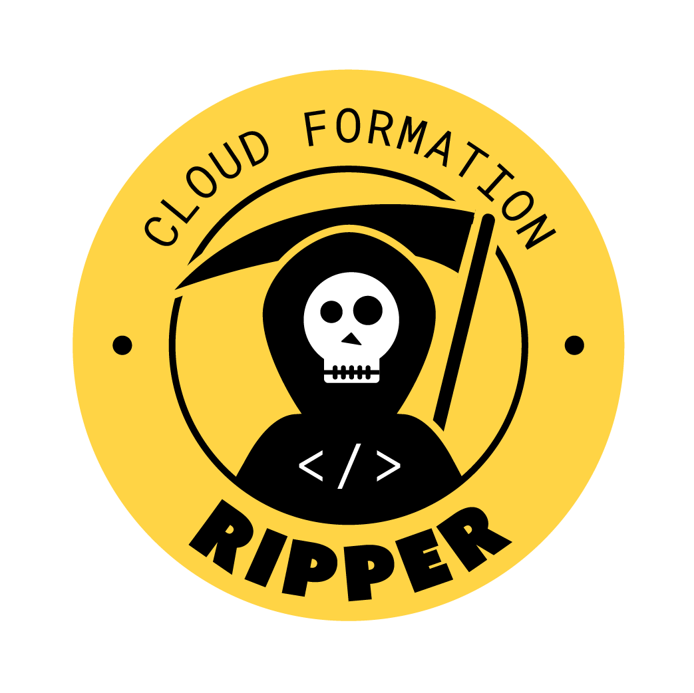

-- heading # Some of the Latest Additions to Slingshot Infrastructure as Code Deployment Pipelines ...and a bit more. -- whoami center ``` $ whoami Carles Barrobés Deployment & Orchestration (DO) Developer Enablement Tribe (DET) ``` -- heading # Infrastructure as Code -- # Goals - Infrastructure defined in version control: - Changes to AWS resources driven by git workflows - Predictability, and better Disaster Recovery - Facilitate Peer Review - Automation: do not require use of the AWS console -- ## How Slingshot Supports IaC Cloudformation templates: - local JSON/YAML files within the same repo (we use the `supportFiles` feature to upload them to S3) - URLs [e.g. to an S3 bucket] A Slingshot YAML file with `serviceType: infrastructure`: - List of stacks to be deployed: template and parameter values -- ## Full example ```yaml project: slurp serviceName: lullaby serviceType: infrastructure # ... regions: [eu-west-1, ap-northeast-1] supportFiles: buckets: filename: cf/buckets.yml somethingElse: filename: cf/somethingElse.yml dryRun: {{ dry_run }} stacks: - name: slurp-buckets template: $$FILES.buckets parameters: BucketSuffix: first - name: slurp-something-else template: $$FILES.somethingElse parameters: First: 'prefix-$$REGION-suffix' my_ami: customAmi: name: my_awesome_ami ``` -- ## Multi-Regional Variations *(Standard for all Slingshot service types, not just IaC)* ```yaml regions: eu-west-1: defaultCount: 12 ap-northeast-1: defaultCount: 6 stacks: - name: 'slurp-something-else' template: $$FILES.somethingElse parameters: First: 'prefix-$$REGION-suffix' Second: $$META.defaultCount ``` https://confluence.skyscannertools.net/x/zQysAQ -- ## Dynamic Parameters Values that are **looked up upon deployment**. ATM we only support looking up a `customAmi`. ```yaml supportFiles: vms: filename: cf/vms.yml stacks: - name: slurp-vms template: $$FILES.vms parameters: AmiID: customAmi: name: my_awesome_ami ``` https://confluence.skyscannertools.net/x/lKHmAg -- ## Built-in Security Checks Every stack goes through a security validation stage (**CF Ripper** by ProdSec), where a (growing) number of security checks will be performed.  -- heading # Deployment Pipelines Being able to orchestrate multiple workflows -- center ## A look into a not so distant past (when I joined Skyscanner in February 2017) -- ## Status as of early 2017 - Sandbox and prod require *separate drone steps* - Each region requires a *separate drone step* - If your repo deployed multiple components (e.g. microservices, lambdas...), each requires a *separate drone step* (multiply that by region and account combinations) - All deployments happen *in parallel* -- center Loads of drone steps, one per account/region/service combination: ```yaml # the olden days of drone 0.4 deploy: sandbox-eu-west-1: image: 325714046698.dkr.ecr.eu-west-1.amazonaws.com/drone-plugins/slingshot-service endpoint: http://slingshot.eu-west-1.sandbox.aws.skyscanner.local/ custom_parameters: tag: 1.0.$$BUILD_NUMBER when: branch: - master prod-eu-west-1: image: 325714046698.dkr.ecr.eu-west-1.amazonaws.com/drone-plugins/slingshot-service # ... when: branch: - master prod-eu-central-1: # ... prod-ap-southeast-1: # ... prod-ap-northeast-1: # ... ``` -- ## Improvements before Pipelines Before introducing pipelines, there had been improvements of two types, towards: - Consolidating deployments into fewer deploy steps (e.g. support for `regions`, `$$REGION` and `$$META`) - Giving users some early form of establishing dependencies between workflows (a `dependsOn` keyword) -- ## One Slingshot to Deploy Them All Goal: perform a **multi-service**, **multi-account**, **multi-region** deployment as a single orchestrated execution. <br/> The enabler for that are **deployment pipelines**. Within a pipeline you specify what elements will be deployed where in which order. -- ## Pipeline Example ```yaml serviceType: pipeline serviceName: pipeline-demo # ... pipeline: - file: .slingshot-batch.yml # external yaml - definition: # inlined definition serviceType: api serviceName: pipeline-demo serviceDefinition: cluster: "{{ ecs_cluster }}" role: "" taskDefinition: containerDefinitions: - name: "hello-world" image: "tutum/hello-world" memory: 128 tags: Contact: "Iva" Project: "slingshot" ``` -- ## Pipelines in the Slingshot UI - Each individual deployment will appear in the service's page - The pipeline is a parent workflow, the others are *child workflows*  -- ## Pipeline Deployment Log You can see an overview of the pipeline, and click through to step execution details  -- ## Regional Rollouts - Choose the rollout order for regions - Combine serial and parallel regions for canary rollouts ```yaml # define regions and rollout order rollout: - [ap-northeast-1] - [eu-west-1, eu-central-1] - [ap-southeast-1] pipeline: - file: .slingshot-role.yml regions: ['ap-northeast-1'] # regions this step will run in - file: .slingshot-k8s.yml # no filter, deploy to all regions ``` -- heading ## Ongoing and Future Developments - Multi-Account - Extended Deployment Controls -- ## Currently under development: multi-account workflows Deploy to multiple AWS accounts: - A **single Slingshot instance**, to deploy to any account - A single drone deployment step will be able to run deployments into multiple accounts -- ## ...multi-account workflows Opens up possibilities: - A single workflow orchestrates cross-account deployments (e.g. deploy to a *sandbox account* and a *production account* from the same pipeline) - One of the account/region combinations (e.g. `canary/eu-west-1`) can be used as a *canary* - if deployment fails, it won't proceed further -- ## Future plans - Pipelines: - Being able to pass outputs from pipeline steps as inputs to subsequent steps - Use the same template with different parameter combinations as a different pipeline step - Better options for parallelisation of pipeline steps - Traffic Management: - Better control over traffic allocation during deployments -- ## Future plans ...and more importantly, things you will tell us about: - `<insert your requirements here>` -- heading # Thanks! > Carles Barrobés & the DO team